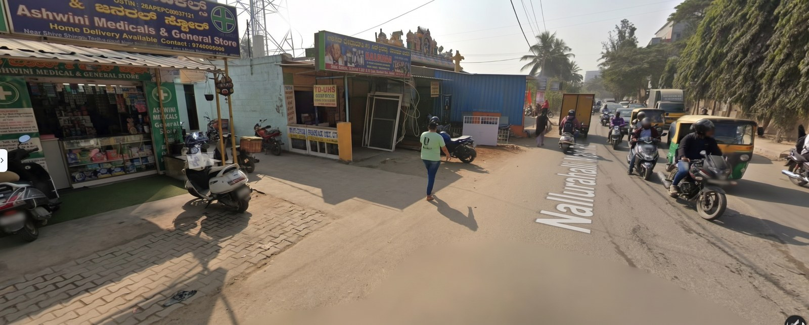
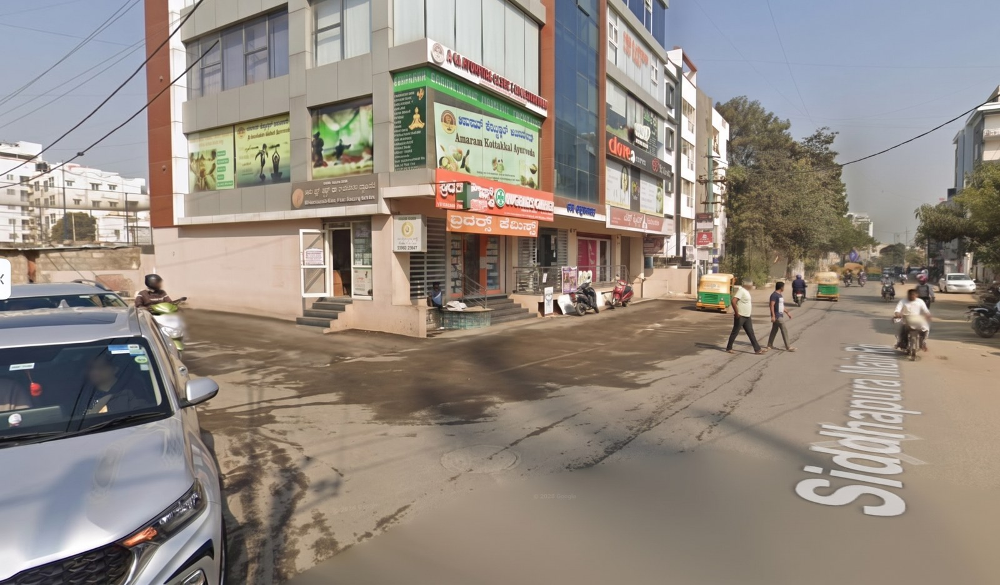
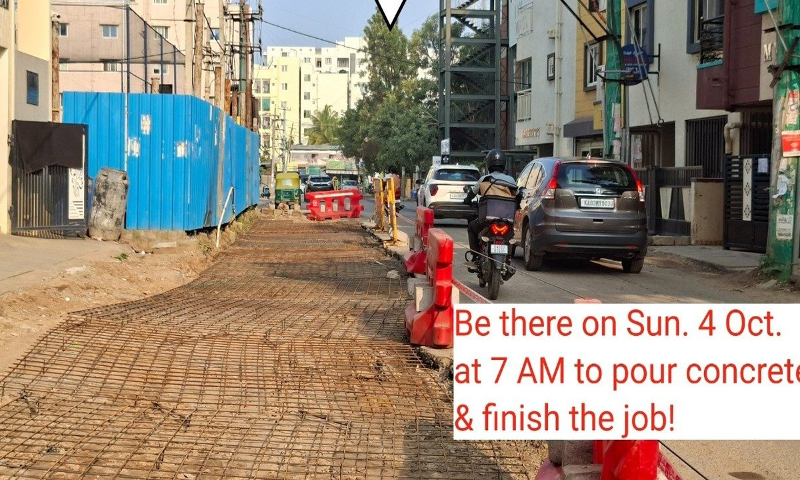
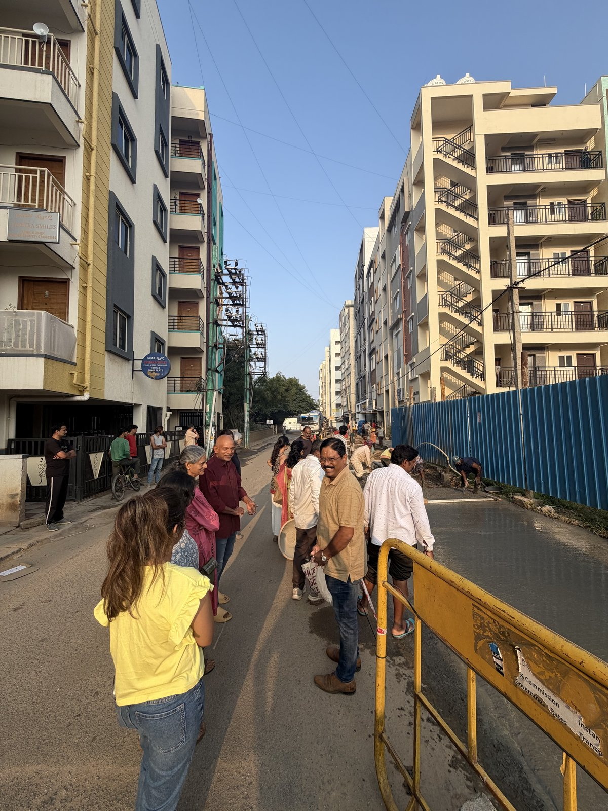
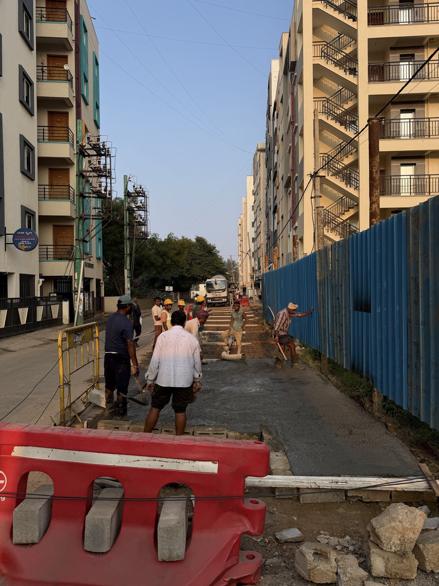
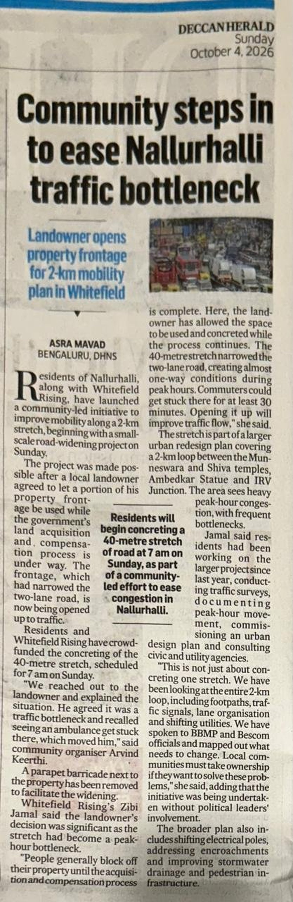
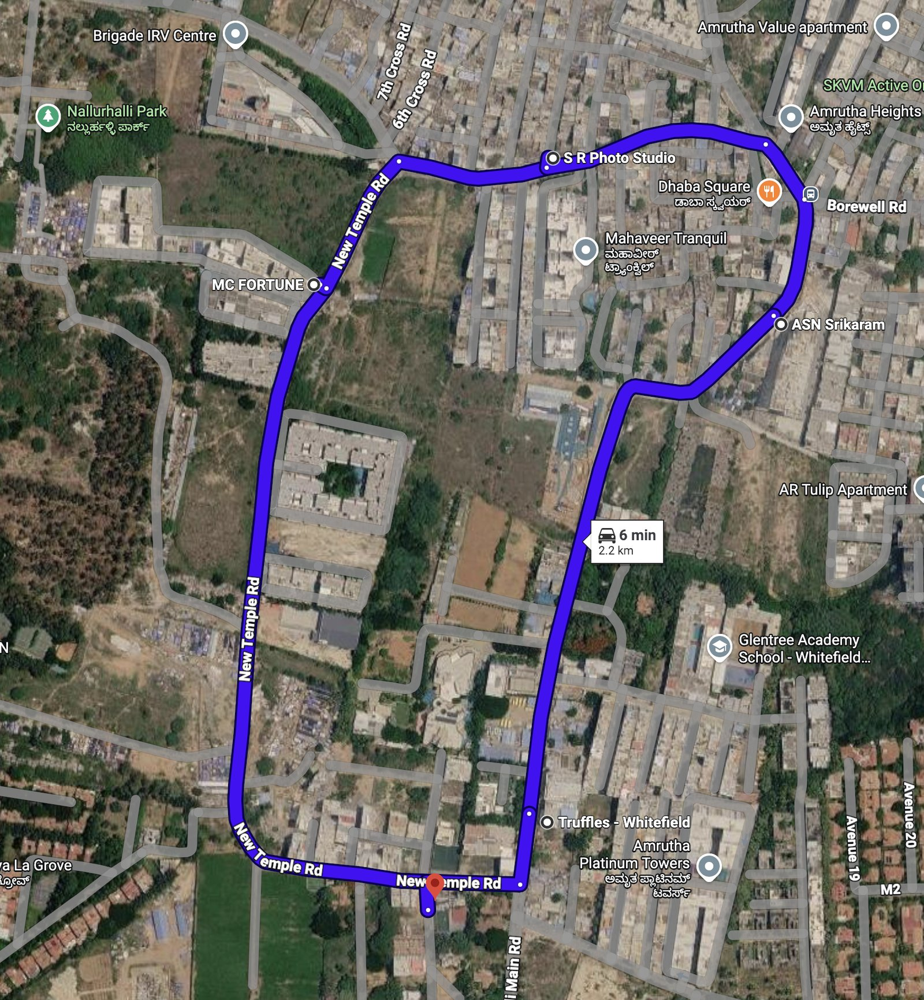

The 2 km Loop & Bottleneck Solutions
A phased, citizen-led effort by Nallurahalli residents and Whitefield Rising to eliminate traffic choke points, underground cables, and establish a permanent one-way circulation loop around Nallurhalli Metro.
Choke Point #2: Shiva Temple Junction — Underground Cables & Remove 7 Poles
Seven high-tension and distribution electrical poles stand directly in the roadway at the Shiva Temple / Bro Chemist junction, choking traffic into a dangerous single file. Here is our plan to remove them.
Interactive View: Shiva Temple Junction (With Poles vs. Cleared Roadway)
Drag the slider to see how moving cables underground will reclaim the full width of the carriageway.

Proposed: Cables Underground & Poles ClearedInteractive View: Commercial Stretch (Bro Chemist Corner)
Drag the slider to see the reclaimed lane on the connecting commercial corridor.

Proposed: Unblocked LaneChoke Point #1: 40m Bottleneck at 15 New Temple Road
For years, this 40-metre stretch narrowed to a single lane between stone compound walls. Opposing cars could not pass, trapping traffic for kilometres. Through constructive civic dialogue with the local landholders, permission was given to pave and open the full road width.
Interactive View: 15 New Temple Road Before & After

Now: Widened & PavedSunday Concreting: Community at Work
Watch residents, volunteers, and engineering teams pour and finish the 40-metre stretch on October 4, 2026.
Ground footage: Concreting the bottleneck at 15 New Temple Road.

Community Bucket Line
Leveling & Finishing
Deccan Herald CoverageThe 2.2 km Circulation Loop
Connecting Varthur Road, New Temple Road, 2nd Main, and Nallurahalli Main Road in a continuous clockwise flow to eliminate bi-directional gridlock.

Key Loop Milestones & Waypoints
Head Start Montessori
Entry junction connecting Varthur Main Road to the interior loop.
15 New Temple Road
Choke Point #1: 40m bottleneck successfully concreted on Oct 4.
Shiva Temple Junction
Choke Point #2: 7 electric poles in roadway undergoing ₹17L cabling drive.
S R Photo Studio & 2nd Main
Turn toward Nallurahalli Main Road with planned pedestrian sidewalk.
Dhaba Square / Borewell Jn
Northeast corridor connecting toward Whitefield Post Office / ECC Rd.
Siddapura Main Road
Southward return corridor passing Truffles & Shell / HP fuel outlets.
The Journey to a Functional Loop
From neighbourhood protests to collaborative engineering with civic bodies.
BESCOM Joint Inspection & ₹17L Drive Launched
Joint site inspection conducted with BESCOM engineers for Shiva Temple junction. Technical clearance confirmed for undergrounding cables and removing 7 road poles. ₹17 Lakh fundraising launched via Whitefield Rising Trust.
40m Bottleneck Paved with Concrete
Community volunteers and engineering workers poured reinforced concrete over the 40-metre stretch on New Temple Road, funded by ₹4 Lakhs of resident contributions.
Read Times of India report ↗Landowner Agreement & Crowdfunding
Landowners generously agreed to grant public right-of-way while retaining property title, breaking a multi-year deadlock without costly litigation.
Nallurhalli Metro Station Opens
Namma Metro Purple Line brings thousands of daily commuters to Nallurhalli, making the 2 km loop critical for last-mile connectivity.
Agency Roadmap & Shared Responsibility
Achieving a permanent solution requires coordination between civic agencies and citizen initiatives:
| Task / Milestone | Responsible Stakeholder | Status |
|---|---|---|
| 40m Curing & Barricades | Nallurahalli Residents | Curing Complete (~Oct 18) |
| Shiva Temple 7-Pole Cable Undergrounding | Whitefield Rising + BESCOM | Fundraising (₹17L Target) |
| One-Way Signage & Police Deployment | Whitefield Traffic Police | Formal Order in Progress |
| Stormwater Drain (SWD) Slabs & Sidewalks | BBMP / GBA East | Representation Submitted |
Be Part of the 2 km Solution
Whether by contributing to the Shiva Temple ₹17L cable undergrounding drive, sharing the campaign video, or volunteering on-ground — your participation counts.
Join the WhatsApp Community